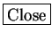

Next: Wavelet Transforms
Up: Get Input
Previous: The Preprocessing Menu
Contents
Figure 3.3:
The Load file window in STRFPAK
|
|
Figure 3.4:
The Songwave  Spectrogram window in STRFPAK
Spectrogram window in STRFPAK
|
|
In auditory system STRF estimation, it is common to represent sound in a time-frequency representation rather than a raw waveform. The short time Fourier transform (STFT) is a simple example of such a representation, and is included in STRFPAK.
The STFT representation of a sound can be thought of as the amplitude
envelope of the different frequency components of a sound.
After clicking the
 button,
the Songwave spectrogram
window shown in Figure 3.4
appears. The right panel of that window displays options for and properties of the STFT. The left panel is used for displaying your output
when you click the
button,
the Songwave spectrogram
window shown in Figure 3.4
appears. The right panel of that window displays options for and properties of the STFT. The left panel is used for displaying your output
when you click the
 button.
button.
-
 : It is used to load raw data, e.g. sound wave files
and their associated response data files into the STRFPAK structure.
The Load file window shown in Figure 3.3
pops-up after
is clicked.
: It is used to load raw data, e.g. sound wave files
and their associated response data files into the STRFPAK structure.
The Load file window shown in Figure 3.3
pops-up after
is clicked.
- Load stimulus files: This panel is used for showing all
the files under the directory which is shown in the dark green area.
It may contain the stimulus and response files under that directory.
However, you need to select only the stimulus files from this panel.
To select multiple stimulus data, hold down the CTRL key while
clicking your selection.
- Load response files: This panel is used for showing all
the files under the directory which is shown in the dark green area.
It may contain the stimulus and response files under that directory.
However, you need to select only the response files from this panel.
To select multiple response data, hold down the CTRL key while
clicking selection.
- Show selection: This panel shows what you just selected.
It helps you double check your selection. Note the first file in the
data pair needs to be the stimulus and the second needs to be its associated response.
The order is very important.
-
: This button helps you to change the
directory of the Load stimulus files panel.
-
: This button helps you to change the
directory of the Load response files panel.
- : After you highlight what you want from
Load stimulus files and Load response files, you need
click this button to load them into the toolbox and show them
in the Show selection panel.
 : You can remove any one or more data sets by
clicking button from the Show selection area.
: You can remove any one or more data sets by
clicking button from the Show selection area.
- Parameters: All the parameters needed for the STFT on
the sound wave stimulus files are specified here. For detailed
description about this method, please refer to our preprocessing
paper [].
- filter_width (Hz): the width of the filter in Hz. It defines window
length of filter (here we use a Gaussian filter).
- filter_width (ms): the width of the filter in ms, inversely proportional to the filter width in Hz.
- amp_samprate (Hz): the sampling rate that we want for the amplitude
envelope. By default, it is 10 times that of filter_width, but you can change it.
- resp_samprate (Hz): the sampling rate of the spike data. This must be set to the sampling frequency in Hz when you collect your data. For example, with 1 ms bins, the resp_samprate would be 1000 Hz.
- psth_smoothconst: the window length for smoothing your psth. For validation purposes, it is common to smooth the PSTH before calculating a correlation coefficient. psth_smoothconst is the width in ms of this smoothing window.
- stim_samprate (Hz): the sampling rate of stimuli in Hz. e.g. the demo
songwave file has a sampling frequency of 32000 Hz, and many music files have a sampling rate of 44100 Hz. It is automatically
calculated for you based on your sound wave file.
- nbands: the numbers of frequency bands covered for the calculation.
You don't need to specify since the code will it figure out based
on your filter_width (Hz).
- Scale option: the choice of whether linear scale or logarithmic scale
is used for the amplitude envelope. For many sensory systems a neurons response correlates better to the log of a stimulus intensity better than to the stimulus intensity itself.
-
 : Computes the spectrogram of the signal and saves
the result into the directory which you are asked to specify.
The computing status bar also shows up so that you can know the
progress of the computation.
: Computes the spectrogram of the signal and saves
the result into the directory which you are asked to specify.
The computing status bar also shows up so that you can know the
progress of the computation.
-
: Graphically displays the spectrogram of the stimulus and
the psth smoothed with psth_smoothconst window size.
If more than one data set are chosen,
 and
and
 buttons show up so that you can click to see the
next data set.
buttons show up so that you can click to see the
next data set.
 : Resets all the parameters and the data sets chosen.
: Resets all the parameters and the data sets chosen.
 : Causes a help window on this window to appear.
: Causes a help window on this window to appear.
- : Closes this window and saves all the parameters and all the
results.
Next: Wavelet Transforms
Up: Get Input
Previous: The Preprocessing Menu
Contents
2004-08-09